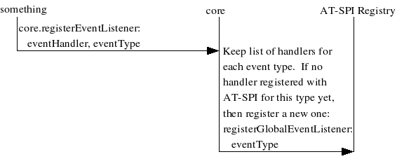
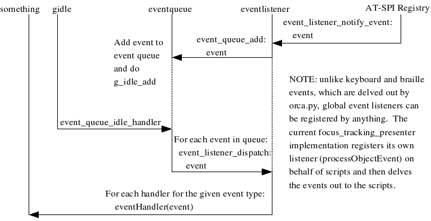
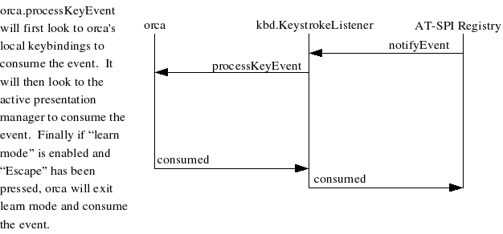
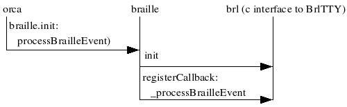

Orca Documentation Series
Sun Microsystems, Inc.
- Table of Contents
- Foreword
- Introduction
- Personas
- User Requirements
- Availability at All Times
- Failure Resiliency
- Seamless Interaction with Traditional Keyboard Navigation Methods
- Seamless Interaction with Other Assistive Technology
- Consistent Style
- Customizable Behavior Per Application ("Scripting")
- Configurable Presentation and Interaction
- Focus Tracking as the Default Mode
- Flat Review Mode
- Presentation of Text
- Learning Mode (Command Echo)
- Customizable Gestures
- "List All Applications" Command
- "Where Am I?" Command
- "Jump to Well Known Object" Commands
- "Find" Command
- Watched Objects
- Bookmarked Objects
- Document Reading
- Ability of Non-focused Windows to Present of Information
- Speech Synthesis
- Key and Text Echo
- Refreshable Braille
- Synchronization with Screen Magnifiers
- Acceptable Response Time
- Documentation and Tutorials
- Default Interaction Styles
- Bibliography
Foreword
Orca is a flexible, extensible, and powerful assistive technology that provides end-user access to applications and toolkits that support the AT-SPI (e.g., the GNOME desktop). With early input and continued engagement from its end users, Orca has been designed and implemented by the Sun Microsystems, Inc., Accessibility Program Office.
NOTE: Orca is currently a work in progress. As a result, this and other books in the Orca Documentation Series are under continuous modification and are also in various states of completeness.
This book covers the design of the user experience for Orca.
Introduction
The development of Orca focused primarily on the requirements of its end users. Orca's users may require non-visual access methods such as speech and/or braille and they may also require alternative visual access methods such as magnification.
When designing Orca, its authors at Sun Microsystems engaged the user community from the start, soliciting feedback on questions such as the following:
What tasks do they want to accomplish?
How do they accomplish these tasks?
What should the screen reader present to them?
What is the user experience like?
This book covers the user design of Orca, ranging from a poetic use of Cooper's "Persona" concept [cooper99> ] to the development of the end user requirements and default interaction styles for speech synthesis, braille, magnification, and input devices.
Personas
The Orca user personas are intended to be a tool that helps elicit use cases and user requirements. The approach is to think of "real" users with specific disabilities performing specific actions. These personas are meant to cover a range of typical users, both in the tasks they want to accomplish as well as their disabilities. The Orca user design explored four personas, each of which is discussed in the following sections:
Lee: a programmer who uses braille
Pat: a manager who uses magnification and speech
Kim: an administrative assistant who uses speech
Sam: an IT staff member who uses speech and braille
Lee the Programmer
Lee is a programmer who is primarily a braille user and typically performs the tasks outlined in the following sections.
Write code in NetBeans
Lee edits a program module in NetBeans. Over the course of this editing, Lee must be able to do the following:
Determine proper indenting. On the braille display, Orca shows this by using blank spaces. Orca also has an option to compress horizontal spacing so as to better make use of braille real-estate.
Lee sometimes uses speech as well, and uses separate commands to have Orca read the indentation level. When in focus tracking mode, Lee also has the option to turn on the automatic speaking of this information.
See highlighting, attributes and coloring. On the braille display, Orca shows this in status cells, where the status cells reflect the attributes of the character under the current cursor position. For braille displays without status cells, attribute information is shown using dots 7 and 8, where a "key on the braille display" is used to cycle through the various attribute types (underline, bold, etc.).
Navigate to and activate buttons and other controls with the braille display, especially those that cannot gain focus using native keystrokes. For example, some code completion and information windows may not have this ability. Lee uses functions to quickly move the braille display to various parts of the screen such as "top of screen" or "line 6." This is typically done under flat review mode, and Lee uses the panning and navigation keys on the braille display to do this.
When Lee presses touch cursors on the braille display, they behave as if a Lee were performing a single left mouse click on the given object associated with the touch cursor.
Monitor an object on the screen. When Lee tells Orca to monitor an object by pressing a key in combination with cursor routing buttons on the braille display Orca will reserve an area on the braille display and will continually display all current information for this object.
Set a part of the screen to jump to, such as a status bar. When Lee lands on an object of interest, Lee will instruct Orca to reserve a keystroke by pressing a key and a touch cursor on the braille display to jump back to the object without moving the active focus. Since Lee is a braille user, Orca also allows Lee to jump to these objects by pressing a combination of a braille display key and touch cursor to jump to a bookmark (e.g., cursor 1 goes to bookmark 1).
Compile code in NetBeans
Lee compiles a program module and fixes errors in NetBeans. Over the course of this task, Lee must be able to do the following:
See all errors and warnings. For example, when Lee compiles a program module, focus will be moved to a window containing errors and warnings. Focus tracking should behave properly here, and the braille display will show the first line in the errors and warnings window.
When Lee has speech enabled, Orca will speak the first line of the message window.
Click on an error with a touch cursor to go to the error. This acts just like performing a left mouse click on the error to take Lee to the editor window and source line for the error. Focus tracking behaves properly here, and the braille display will show the line containing the error.
When reviewing the screen, Orca compresses white space on the braille display to allow Lee to review more quickly. For example, when there are only blanks to the right and Lee presses the pan-right button on the braille display, Orca will take Lee to beginning of the next non-blank line. Orca also indicates positional information by displaying optional "beginning of line" and "end of line" characters which are standard well known characters on the braille display. Orca also optionally shows vertical screen position in status cells. Orca also optionally plays sound effects to indicate line changes.
Run the application being created and access it. General screen reading functionality applies here.
Compose document in StarOffice
Lee writes rough draft of an architecture document in StarOffice. Over the course of this editing, Lee must be able to do the following:
Detect text selection. When Lee selects text in the document, Orca uses dots 7 and 8 on the braille display to indicate the text selection. Note that this will hide any capitalization held in dot 7, but that's OK.
Use spellcheck to determine misspelled word and read list of possible replacements. NOTE: Lee wants to be able to see both the spellcheck dialog and the misspelled word in context. When spellcheck dialog comes up, Orca provides a well known command to say "read the word in its context". Speech will speak it. Braille will display it, and any other action snaps Lee back to the spellcheck dialog.
Read documents in grade two braille. Lee uses a well known command to toggle between grade one and grade two braille.
TODO: Perhaps not a 1.0 requirement.
Detect attributes of text. Lee does this in the same way as described in "highlighting, attributes and coloring" above.
Easily comprehend tabs and spacing. Less does this in the same way as described in "determine proper indenting" above.
Bring up a list of toolbar items to quickly access with the keyboard. For example, some applications are well-behaved and let you move to the toolbar. Others do not. Orca provides a well known command that takes Lee to toolbar navigation mode. Another well known command (e.g., escape) gets you out of this mode.
NOTE: this may also be workable via review mode, but the screen reader always attempts to provide Lee with the most efficient means for accomplishing any task.
Review the currently visible window with the braille display without moving the active cursor (e.g., the caret or the object with focus). Lee uses Orca's flat review mode to do this, and Orca's flat review mode also allows Lee to select an object (and caret position in that object, if caret position applies).
Navigate and read all prompts and controls (including static text) in dialogs such as "Save as..." both in flat review mode and in logical order.
View labels on the same line as the control they refer to followed by the control type. NOTE: Orca automatically does this in braille when in focus tracking mode, but will not do this when in flat review mode.
Obtain "where am I" info. In focus tracking mode, Orca's braille display always tells Lee this (e.g., it displays "file open dialog, filename text area, role" on the braille display - see the braille specification document for more information). Updates to text areas cause automatic panning of braille so as to keep as much of text area on display as possible, with weight given to the caret.
Read and write e-mail with Evolution
Lee reads and writes e-mail with Evolution to communicate with team. Over the course of this task, Lee must be able to do the following:
Read all e-mail formats (e.g., plain text and html). Orca relies on Evolution to give it the proper AT-SPI object information for this.
Track the message list and easily be able to determine such info as time, date and message priority. Orca places all this information on one line of the braille display if at all possible.
Spellcheck an outgoing message as described above.
See autocompletion information as it is appearing. Orca displays this information to Lee on the braille display and keeps the cursor at the current caret position.
When Lee has speech enabled, the speech output also speaks the autocomplete values.
Use terminal windows
Lee also interacts with terminal windows on a daily basis. While BrlTTY is most likely the better solution for Lee (who is primarily a braille user), Lee may also want to access a GUI terminal on occasion. Lee needs to be able to do the following:
Navigate the terminal window. Orca updates the braille display to track the cursor in apps such as emacs and vi. Orca also updates the braille display to track the navigation of fields in terminal apps (such as curses applications).
TODO: Handling curses applications may be a lower priority task at this point.
Use the calendar tool
Lee sets up appointment for team design discussion using a calendar tool. Over the course of this task, Lee needs to be able to do the following:
See relevant information about each time slot. Orca uses braille to show this relevant information (e.g., is that slot available and if not, what is scheduled?).
See the prompts for each field when filling out an appointment. Orca displays all information for the current field on the braille display if it will fit. If it will not, Orca supports panning of the braille display. Orca also makes it possible to restrict panning to the braille concept of the current element which means that the user can not pan away from the information about the current control.
Browses the web using Mozilla
Lee uses Mozilla to read JDK JavaDoc, the latest Java Tips and Tricks article, and the latest slashdot content. Lee needs to be able to do the following:
View all links in a list view and also be able to activate them. Orca allows Lee to arrow through the links and hit first letter (or perhaps enter key) to activate them.
TODO: might need to be concerned about conflict with web forms with buttons such as "Submit All Changes" that will react to presses of the enter key.
Jump past links on the page to get directly to large blocks of text. Orca provides a well known command to do this. This is useful for reading documentation and articles where Lee is reading one page after another.
Select, cut, copy and paste blocks of text from a web page. Orca relies on the semantics of the application to do this.
View the URL of imagemap links with no useful information. Orca provides this as part of one of its navigation modes. Ideally, the browser will allow any user to navigate to any link, thus allowing Orca's focus tracking mode to handle this. If not, however, Orca's flat review mode will provide this functionality.
See labels properly associated with input fields on the braille display; relevant table information should be shown on the display when moving between columns and rows.
Move back and forth between headers (e.g., H1, H2, etc), tables, and frames. Orca relies on the built-in keyboard navigation of Mozilla to do this.
Distinguish links from regular text. Lee does this in the same manner as described in the "highlighting, attributes and coloring" section above.
Pat the Manager
Pat is a manager who is primarily a magnifier and speech user and typically performs the tasks outlined in the following sections:
Browses the web using Mozilla
Each morning before going to work, Pat uses Mozilla to read the daily news from CNN. To do so, Pat needs to do the following:
Jump past links on the page to get directly to large blocks of text. Orca provides a well known command to do this. This is useful for reading documentation and articles where Pat is reading one page after another.
Select, cut, copy and paste blocks of text from a web page. Orca relies on the semantics of Mozilla to do this.
View the URL of imagemap links with no useful information. Orca provides this as part of one of its navigation modes. Ideally, Mozilla will allow any user to navigate to any link, thus allowing Orca's focus tracking mode to handle this. If not, however, Orca's flat review mode will provide this functionality.
Hear and see links, menu items, and buttons as Pat navigates to them using Mozilla's built-in keyboard navigation methods.
Move back and forth between headers (e.g., H1, H2, etc), tables, and frames. Orca relies on the built-in keyboard navigation of Mozilla to do this.
Distinguish links from regular text. Pat does this in the same manner as described in the "highlighting, attributes and coloring" section above.
Have the document spoken starting from the current position. Orca provides a well known command to to start reading at the current position and stop when desired. Orca also automatically tracks and magnifies the text while it is being read. When reading is stopped, Orca places the caret (if possible) at the end of the last word spoken.
Pat uses Orca's option of using alternative voice styles to indicate various attributes of the text. Orca also provides a well known command to speak all the attributes of the text at the cursor (e.g., "bold underlined 12-point helvetica").
Read and write e-mail with Evolution
Pat is also a heavy e-mail user, especially to communicate with Pat's staff and boss. As such, Pat needs the following:
See and hear the highlighted item in the message list. Orca also gives Pat the ability to hear descriptive information about the currently highlighted item. For example, Pat can determine information such as if the item is unread and/or has an attachment.
Hear and see links, menu items, and buttons as Pat navigates to them using Evolution's built-in keyboard navigation methods.
Have the document spoken starting from the current position. Orca provides a well known command to start reading at the current position and stop when desired. Orca also automatically tracks and magnifies the text while it is being read. When reading is stopped, Orca places the caret (if possible) at the end of the last word spoken.
Pat uses Orca's option of using alternative voice styles to indicate various attributes of the text. Orca also provides a well known command to speak all the attributes of the text at the cursor (e.g., "bold underlined 12-point helvetica").
Change the color of the magnified area. If the full screen is magnified, the entire screen will have the same scheme. If the lens view is on, then only the lens has that color scheme. This is important because Pat sometimes loses the location of the lens and the contrast between the magnified area and rest of the screen helps Pat find it.
See and hear prompts and controls in dialogs. For example, when a search dialog comes up, Pat sees the focused component in the magnified display and hears "subject: edit."
Use one or more well known commands to quickly change magnification level and style. Magnification styles include things such as: magnification lens that moves around display and fixed magnification window that follows mouse and focused object. For following the mouse, Orca also provides additional options such as "mouse centered", "optimal least movement", etc.
Commands to turn magnification tracking on and off.
Use multiple zoomers to track both the "locus of focus" as well as other areas of the screen (e.g., status bar).
Compose presentation in StarOffice
Pat periodically needs to create an "All Hands" presentation in StarOffice. To do, Pat needs the following:
Select from the slide templates. This might require review mode.
Determine the position on the slide that typed text will appear.
TODO: is this perhaps more for someone who doesn't use magnification?
Determine if the slide is full or if part of text or an object won't fit.
TODO: is this perhaps more for someone who doesn't use magnification?
Cut and paste objects and text from and to a slide.
TODO: the application should provide this, but Pat will still need to be able to determine what is selected. How will Pat do this?
Move and size objects on a slide.
TODO: is this perhaps more for someone who doesn't use magnification?
Determine bullets and indentation levels for text.
TODO: is this perhaps more for someone who doesn't use magnification?
Pat sometimes invokes a spreadsheet while writing documents. When doing so, Pat brings up multiple zoomers that place cell location, formulas, etc., in a small area on one of the corners of the screen. Orca allows the location of the zoomers and what the zoomers track to be completely customized.
Read help documentation
Pat needs to be able to read the help documentation, and often needs to do the following:
Navigate the contents magnified and with speech. If a topic has sub-topics Orca makes it clear by speaking so when the topic is highlighted. Speech also tells Pat what level in the help tree Pat is in.
See and hear each content pane. Orca automatically reads each content pain when it gains focus and magnifies each word/line as it is read.
Compose text document in StarOffice
Pat also writes performance reviews in StarOffice. To do so, Pat often performs the following tasks:
Use spellcheck to determine misspelled word and read list of possible replacements. By default, Orca speaks the misspelled word followed by the default choice. NOTE: Pat often wants to be able to see the misspelled word in context. When spellcheck dialog comes up, Orca provides a well known command to say "read the word in its context". Speech will speak it and the magnifier will show it. Any other action snaps Pat back to the spellcheck dialog.
Pat uses Orca's option of using alternative voice styles to indicate various attributes of the text. Orca also provides a well known command to speak all the attributes of the text at the cursor (e.g., "bold underlined 12-point helvetica").
Hear current character, word and line. Orca provides one or more well known commands to do this. When the well known command is pressed a second time, Orca spells the word. When the well known command is pressed a third time, Orca spells the word phonetically.
Hear capitalization. For example, when arrowing across the name "Mike" Orca says 'cap m' 'i' 'k' 'e'. Optionally, Orca changes the pitch for the capital letter.
Bring up a list of toolbar items to quickly access with the keyboard. For example, some applications are well-behaved and let you move to the toolbar. Others do not. Orca provides a well known command that takes Lee to toolbar navigation mode. Another well known command (e.g., escape) gets you out of this mode. NOTE: this may also be workable via review mode, but the screen reader always attempts to provide Lee with the most efficient means for accomplishing any task.
Have dialog static text and focus information should automatically be read if a dialog such as "save" or "print" appears. Orca also provides commands to read this information as well as the entire dialog.
Detect text selection by both seeing the text in the magnifier and also hearing "selected" when navigating character-by-character or word-by-word. Orca also provides a well known command (e.g., "say selection") to read the currently selected text.
TODO: what happens when there are multiple discontiguous regions selected?
Use address book
Pat uses his address book often to locate contact information. To do so, Pat needs Orca to do the following:
Track the address list, speaking and magnifying the currently selected person.
Speak and magnify all controls in the "find" utility as Pat navigates them.
Hear details about an individual contact. When navigating the found contact, Pat needs to hear and see the label and content of each field. Orca also provides a well known command to re-read the current label and roll for the focused item.
Use the calendar tool
Pat sets up a staff meeting using a calendar tool. See Lee's stuff above, but apply to speech and mag.
TODO: need to flesh this out some more.
Kim the Admin
Kim is an administrative assistant who is primarily a speech user. Kim regularly performs the tasks outlined in the following sections.
Use the address book
Kim often uses the address book to add and find contact information for Pat. As such, Kim needs to be able to do the following tasks:
Track the address list, speaking the currently selected person.
Speak all controls in the "find" utility as Kim navigates them using the system's built in keyboard navigation commands.
Hear details about an individual contact. When navigating the found contact, Kim needs to hear the label, content, and roll of each field. Orca also provides a well known command to re-read the current label and roll for the focused item.
Detect text selection by hearing "selected" when navigating character-by-character or word-by-word. Orca also provides a well known command (e.g., "say selection") to read the currently selected text.
Read the title and status bar of the current application. Orca provides this via a well known command to invoke the "Where am I" functionality of Orca.
Use the calendar tool
Kim often sets up calendar appointment for Pat and others. To do so, Pat needs Orca to provide the following abilities:
Track the date and time views of the calendar. When navigating, Kim hears, for example, the current time and if an appointment is currently set.
TODO: Mike - write down your ideas for this!
Hear the label for each field and review the information that has been input.
Read the entire appointment. Orca provides this via a well known command to read an entire dialog.
TODO: this assumes the appointment information is input via a dialog.
Browses the web using Mozilla
Kim often orders office supplies and books travel for others on line. Kim does this in a manner similar to Pat, but using only speech instead of speech and magnification. [[[TODO: - probably need to flesh this out more.]]] In addition, since Kim often fills out forms, Orca needs to allow for the following:
Keystrokes to move between form fields only. Orca provides functionality to move from one form field to the next or prior skipping all other links.
Automatically read field labels when moving to form fields.
Read and write e-mail with Evolution
Kim often coordinates and organizes group meetings using e-mail. As such, Kim needs to be able to do the following:
Hear contacts in the address book and know if they are selected.
Use spellcheck to determine misspelled word and read list of possible replacements. By default, Orca speaks the misspelled word followed by the default choice. NOTE: Kim often wants to be able to hear the misspelled word in context. When spellcheck dialog comes up, Orca provides a well known command to say "read the word in its context". Speech will speak it.
Kim uses Orca's option of using alternative voice styles to indicate various attributes of the text. Orca also provides a well known command to speak all the attributes of the text at the cursor (e.g., "bold underlined 12-point helvetica").
Hear current character, word and line. Orca provides a well known command to do this. When the well known command is pressed a second time, Orca spells the word. When the well known command is pressed a third time, Orca spells the word phonetically.
Hear capitalization. For example, when arrowing across the name "Mike" Orca says 'cap m' 'i' 'k' 'e'. Optionally, Orca changes the pitch for the capital letter.
Creates spreadsheet in StarOffice
Kim sometimes views and updates the group budget, which is maintained as a spreadsheet in StarOffice. To do so, Kim needs to be able to do the following:
Automatically hear cell location and content when navigating between cells. Orca speaks, for example: "B4" followed by the cell content. Orca also provides a well known command to speak this information. Orca also provides an option to automatically speak this information when Kim moves from one cell to the next.
Related to the above, hear row and column headers. Orca supports this via separate well known commands.
Automatically hear formulas if they appear in a cell. Orca speaks these after it speaks the location and content information.
Determine and modify size of cell.
TODO: this might require some emulation of mouse behavior if StarOffice doesn't provide dialogs to do this.
Select a range of cells and know that they are selected. Orca speaks "selected" followed by the begin and end coordinates.
Produce and read simple charts and graphs.
Interact with a print dialog to print finished report.
Automatically hear static text and focus information when a dialog appears such as "file" or "reformat." Orca also provides commands to re-read this information as well as the entire dialog.
Sam the IT Guru
Sam is a member IT staff who is primarily a speech and braille user. Sam regularly performs the following tasks.
Use terminal windows
Sam regularly interacts with terminal windows. While BrlTTY is most likely the better solution, Sam may also want to access a GUI terminal to do the following:
Navigate the terminal window. Orca updates the braille display to track the cursor in apps such as emacs and vi. Orca also updates the braille display to track the navigation of fields in terminal apps (such as curses apps), and provides a "speak the current line" to display this information.
Use GUI-based administration tools
Sam interacts with GUI-based tools such as update and network configuration on a daily basis. This includes the following:
Automatically hear static text and focus information when a dialog appears such as "configure network." Orca also provides commands to re-read this information as well as the entire dialog.
In logical order, navigate and read all prompts and controls (including static text).
See all information for the current field on the braille display if it will fit. If it will not, Orca supports panning of the braille display. Orca also makes it possible to restrict panning to the braille concept of the current element. This will restrict panning from moving away from the braille information presented for the current control.
Re-read information as requested.
Read an entire dialog with speech.
Watch a particular field in a dialog box (e.g., the "% CPU utilization" field and be notified when it changes.
TODO: how does Sam specify what to watch and how does Orca notify Sam when the value changes?
User Requirements
Based upon discussions with end users as well as the tasks and ideas from the personas, Orca must supply at least the following end-user features.
Availability at All Times
Orca will often be the only vehicle by which many users will be able to access the system. As such, it must be available at all times, including at system login and screen-saver screens.
Orca must also be available after the system returns from "standby" or "sleep" mode.
Finally, in the event the user's choice of speech synthesis engine becomes unavailable (e.g., expired license), Orca must attempt to find and use an alternative synthesis engine.
Failure Resiliency
In the event that Orca fails or a component of the system that Orca depends upon fails, the system should be able to heal (and perhaps restart) itself appropriately.
Seamless Interaction with Traditional Keyboard Navigation Methods
Orca must allow users to navigate through the desktop and applications on the desktop using the system keyboard navigation gestures (e.g., Alt+Tab to select the next window). In other words, Orca must not interfere with traditional keyboard navigation.
Seamless Interaction with Other Assistive Technology
It is not uncommon for users to simultaneously use other assistive technologies, such as the AccessX features of XKB [XKB>], to access their displays. As such, Orca must be able to co-exist (i.e., not interfere) with other assistive technologies in use by the user.
Consistent Style
It is expected that access to applications will be driven primarily via customized "scripts," with a fallback ("default") script to be used in the absence of a customized script.
While each script can provide dramatically different access to an application, it is expected that scripts will provide a users with a consistent style to access applications. To help with this consistent style, Orca will provide a style guide, a well-documented "default" script, and several application scripts that demonstrate and promote this style.
Customizable Behavior Per Application ("Scripting")
It is expected that the default behavior will provide reasonable access to all applications that use the AT-SPI. However, to provide dramatically improved access, Orca must be able to provide customized behavior for individual applications.
For example, one can envision a script for an e-mail application that can provide prioritized access to one's inbox. Another example may be that the script provides keyboard access to select and copy displayed text to the system clipboard in the event the application doesn't support this (e.g., the only way to select text in a terminal window is to use a mouse - a script might create new keybindings to allow a user to do this from the keyboard).
Configurable Presentation and Interaction
Different users have different capabilities (e.g., some may be able to hear some synthesis voices better than others; some may use braille while others do not) and desires (e.g., some may prefer faster speaking rates). As such, the general manner and means by which Orca presents information to the user must be configurable by the end user.
Users must also be able to change configuration settings while Orca is running, including the ability to turn presentation modes (i.e., speech, braille, magnification) on or off without the need to restart Orca.
Focus Tracking as the Default Mode
Known as "focus tracking," Orca must provide a mode to track the current region of interest, which is usually the object that has keyboard focus.
When first starting up and when the region of interest has changed, Orca must provide a short summary of the region of interest, and must also provide a mechanism for the user to obtain more detailed information. The presentation will follow the style guide.
When navigating text areas in a character-by-character or word-by-word fashion (or any linear fashion for that matter), Orca must provide an option to play an audio cue when the caret crosses line boundaries.
Flat Review Mode
Orca must provide the ability for a user to review the contents of the desktop or a given application. This is typically done by the user making a well known command indicating "review," with Orca reacting by presenting the area to be reviewed. At any time, the user can interrupt the review mode, causing presentations such as speech output to stop immediately.
Another option for review mode includes the ability to use a set of well known commands to quickly skim the contents of the display.
The review of the desktop will follow the style guide, and will at least provide a short summary of the available applications. While the review of an application will also follow the style guide, the overall presentation depends largely upon the application being reviewed.
TODO: Add notions of "hierarchical review," and "hybrid review (e.g., in/out of lists)". Need to flesh out the primary purposes of each.
TODO: Add ability to read a dialog/window.
TODO: As with navigating text, should Orca have an option to play an audio cue when the "next" or "prev" object command takes user to a new line?
Presentation of Text
For any given piece of text, Orca must provide the ability to speak the current character, word, or line. When speaking the current word, Orca must provide the ability to spell it out in either letter-by-letter or phonetic (e.g., military spelling) mode. When speaking a line or set of lines, Orca must offer the ability to verbalize punctuation.
Orca must provide the ability to present the following to the user:
Attributes - font size, face (bold, italic, etc.), underline, color, etc.
Capitalization - is it capital or lower case?
Selection - is the text selected or not?
Indentation - what is the indentation level?
Bounds - what is the bounding box of the text (where and size)?
Learning Mode (Command Echo)
Orca must provide a feature that optionally presents the command to be invoked when the user presses a key on the keyboard or braille display. All key events in this mode will be consumed by Orca, thus allowing the user to freely type anything to learn what the effect of the key will be. A command being spoken must be able to be interrupted at any time.
Customizable Gestures
While Orca will provide a default set of well known keyboard and braille input gestures, users must be able to override these gestures and extend them with gestures of their own choosing.
The user interface for defining these gestures must be easy to use.
"List All Applications" Command
Orca will provide a means for a user to determine all applications running on the desktop as well as all open windows on the desktop.
TODO: the Alt+Tab functionality of the desktop may be sufficient to meet this requirement.
"Where Am I?" Command
Orca will provide a means for a user to determine information about the current object of interest, including the object itself, which window it is in, which application, which workspace, etc.
The object of interest can vary depending upon the navigation mode the user is using at the time. For example, in focus tracking mode, the object of interest is the object with keyboard focus. In review mode, the object of interest is the object currently being visited, whether it has keyboard focus or not.
"Jump to Well Known Object" Commands
There are common locations a user wants to jump to at any given time. These include the title bar, the status bar, the toolbar, the beginning of a window, the end of a window, the system applet tray, etc. Orca will provide well known commands for Orca to enter review mode and set the current object of interest to one of these objects. From this point, the user can use a well known command to go back to the object with focus, give the jumped-to object focus if possible, or perform the equivalent of a mouse click on the jumped-to object.
"Find" Command
Orca will allow users to enter a string to search for a visible text string in the current window or entire desktop. If the string is found (e.g., the string matches the accessible name of an object or the string matches a string in a text area), Orca will switch to "review mode" and make the associated object the object of interest. From this point, the user can use a well known command to go back to the object with focus, give the found object focus if possible, or perform the equivalent of a mouse click on the found object.
In the event the user is a magnification user, the magnifier will moved to the found object.
The search will be performed in the text flow of the locale (e.g., left-to-right, top-to-bottom) from the current point of interest, wrapping back to the beginning of the window if necessary.
The search will provide options for requiring a full word match (e.g., "ok" will not match "token") or substring match (e.g., "ok" will match "token").
Finally, the "find" command will also allow the user to search for text based on attribute (e.g., "bold"), and the search will allow the user to search based solely on attribute type, text string, or a combination of both.
NOTE: this feature is for searching for visible text only. Traditional searching for text in documents will be supported by application functionality (e.g., the "search" menu item in the application.
Watched Objects
Orca will allow users to indicate interest in an object. Once interest has been given, Orca will notify the user of changes to that object, whether it or its window has focus or not. Orca will also provide an option to automatically enter review mode and make the watched object the object of interest. From this point, the user can use a well known command to go back to the object with focus, give the watched object focus if possible, or perform the equivalent of a mouse click on the watched object.
In the event the user is a magnification user, the magnifier will moved to the found object. Alternatively, the user may have set up a separate "zoomer" to watch the object. In this case, the zoomer will always reflect the current state of the watched object.
Bookmarked Objects
Orca will allow users to define a gesture (keyboard or braille) that will tell Orca to enter review mode and make a particular object the object of interest. From this point, the user can use a well known command to go back to the object with focus, give the bookmarked object focus if possible, or perform the equivalent of a mouse click on the bookmarked object.
In the event the user is a magnification user, the magnifier will moved to the bookmarked object.
Document Reading
Orca must provide the ability for a user to read the contents of a document, such as e-mail or a word processing document. As the document is read, Orca will instruct the associated application to scroll so as to keep the portion being read visible on the screen (and magnifier). The invocation of the document reading will be triggered via a well known command and may be stopped at any time by the user. When the review stops, the caret will be positioned at the end of the last word spoken (if possible - this depends upon the capabilities of the text area as well as the speech engine).
Orca will also provide options to highlight the text being spoken.
NOTE: while the reading of a document will follow the style guide, the overall presentation depends largely upon the document being read (e.g., is it a text document, spreadsheet, web page, etc.?).
Ability of Non-focused Windows to Present of Information
Orca must allow for the presentation of information of objects that do not have keyboard focus. While the presentation will typically be information on objects that the user has requested interest in, it may also come from custom scripts that have decided it is important for them to present something. Examples of such information include announcing the status of a progress bar, announcing the subject/sender of incoming e-mail, etc.
Speech Synthesis
One of the primary non-visual ways to present a graphical display to a user is via speech synthesis. Note that Orca need not be a speech synthesizer, but it must be able to drive one. The most important functionality Orca needs for speech synthesis are as follows:
General Synthesis - Orca must be able to speak an utterance (e.g., a word, a label, a sentence, etc.) or set of utterances (e.g., a paragraph or entire document). The utterance being spoken must be able to interrupted at any time.
IMPLEMENTATION DETAIL: if at all possible, the synthesis engine should be able to tell Orca what has been spoken, allowing Orca to synchronize its internal data structures with what has been presented to the user via speech.
Voice Styles - Orca must be able to identify and allow the user to select between the voices available on the various synthesis engines available on the system. In addition, Orca must allow the user to customize parameter settings for the voices, such as average pitch, speaking rate, and volume. The combination of {voice, pitch, rate, volume} will be known as a "voice style." Orca will provide the user with the ability to select the voice styles to be used for various speaking operations (e.g., default, uppercase, warning, alarm, etc.), and may also provide unique "voice style sets" depending upon the navigation mode being used (e.g., focus tracking, review mode, etc.). At a minimum, Orca will support a "default" style to be used for the majority (if not all) of the speaking operations.
Speaking Rate Modification - While the speaking rate will generally remained fixed once configured, users may sometimes which to speed up or slow down the presentation of speech. While it is ideal that user can do this while the synthesis engine is speaking, such functionality is typically not provided by the majority of speech synthesis engines. Orca must, however, allow the user to change the speaking rate that will be used for the next utterance, should the underlying engine support changes to speaking rate.
Multilingual Text - Orca should provide the ability to speak a single utterance that contains words or phrases from multiple locales. This is an emerging area for speech synthesis engines, however, so Orca will support this feature if the underlying engine(s) support it.
Spelling Mode - Orca must be able to optionally spell out words, either letter by letter or by military (e.g., alpha, bravo, charlie) spelling.
Verbalized Punctuation - Orca must be able to optionally verbalize punctuation.
Repeated Character Count - Orca must be able to optionally compress the repetition of character by saying something such as "25 dashes" instead of "dash dash dash dash dash..."
Key and Text Echo
Orca must provide a set of options to allow the user to enable the automatic speaking of keys as they are typed, alphanumeric characters as they are entered/deleted, and words as they are entered. The speech much be interruptable at any time.
Refreshable Braille
Braille is another primary non-visual presentation mode for screen readers. As with speech synthesis, Orca need not directly support a braille display, but it must be able to drive one. The primary end requirements for a braille display are as follows:
Work with BrlTTY - it is not expected that users will abandon character cell access to their virtual consoles. To preserve this access (which will be done via BrlTTY), Orca will not interrupt or alter the behavior of BrlTTY.
Effective use of space - Orca should try to use the cells on the braille display as effectively as possible. This will be driven primarily by the style guide, and can also include the the option to effectively compress white space.
Effective use of input buttons - Orca should use any input buttons on the display as effectively as possible, with the default behavior being the equivalent effect of the BrlTTY bindings for those buttons. These functions include panning the braille display as well as driving the flat review mode. The functions also include the ability to quickly toggle features on and off, such as: toggle compression of whitespace, toggle attributes to be shown using dots 7-8 or status cells, toggle between grade I and grade II, etc.
Effective use of cursor routing keys - Orca should enable the cursor routing keys to be used to click on objects, set slider values, etc.
In the event there is a second set of cursor routing keys, Orca will attempt to make effective use of them (e.g., pressing them tells Orca to relay text attribute information via speech).
Effective use of input button and cursor routing key combinations - Orca should allow the user to use combinations of input buttons and/or cursor routing keys to perform operations such as selecting text, jumping to bookmarks, etc.
NOTE: selection of text using combined keyboard and braille actions (e.g., holding the shift key while pressing a cursor routing key) may also be considered.
NOTE: input of text using chording of braille keys might be considered, but is not a high priority.
Cursor options - Orca should provide the user with the ability to show the cursor or not. If shown, the user should have the ability to make it blink, and should also have the ability to tell it to either take the entire cell or just dots 7-8.
Ability to have multiple pan regions on the display - watched objects may need to be able to remain on a static area of the display (e.g., the rightmost 10 cells). The braille support should enable this and should also allow the user to pan either the "main" display or the watched area.
Synchronization with Screen Magnifiers
In addition to co-existing with each other, a screen magnifier and Orca must be in sync with each other. For example, when Orca is reviewing an area of the screen that is larger than the screen magnifier can display at once, Orca must inform the screen magnifier that the region of interest has changed.
Acceptable Response Time
Orca must not degrade the perceptible performance of the system. That is, user should be able to detect any decrease is responsiveness of the desktop when the Orca is being used. In addition, a user's interaction with Orca should appear as crisp and as lively as normal interaction with the display via traditional interfaces (e.g., the keyboard).
Acceptable performance of the speech synthesis output is very important. Orca must be able to provide speech synthesis that meets or exceeds the following performance metrics:
Time to First Sound - The time between when a speech synthesizer gets a request to speak and when the synthesizer actually starts speaking must be minimal (e.g., less than 30ms).
Time to Cancel - Orca must be able to cancel speech synthesis in progress, and the time to cancel must be minimal (e.g., less than 30ms). Furthermore, the time between when a cancel is issued and the time the next utterance is to be spoken must be minimal (e.g., less than 30ms).
All updates to the braille display should occur within 50ms of the time the update command was issued.
The magnifier should offer smooth performance and show no visible lag.
 | Performance Scope |
|---|---|
It is understandable that much of the response time may be due to factors outside the control of Orca (e.g., Bonobo and the underlying speech engine). As such, the primary responsibility of Orca and each application script is to process AT-SPI and keyboard events as quickly as possible. |
Documentation and Tutorials
Although it is a reasonable goal that Orca should attempt to achieve, users cannot be expected to be able set up and use Orca without documentation. Like other systems, such as JAWS, Orca must provide documentation and tutorials on the installation, configuration and use of Orca. This documentation must come in form(s) that are accessible to people who need to use the screen reader (e.g., accessible text and audio).
Default Interaction Styles
Associated with the discussion of the personas was the notion of a need for consistent and efficient interaction methods for Orca. This notion resulted in the development of default interaction styles for speech synthesis, braille input and output, magnification, and keyboard control of Orca. The following sections describe these default interaction styles in more detail.
Input Style: Keyboard Mappings
This section describes the default keyboard mappings for the focus tracking and flat review modes of the Orca screen reader. Note that Orca allows these mappings to be overridden and extended, allowing users to define their own keyboard mappings.
As with most other available screen readers, the numeric keypad is the primary location for Orca keystrokes. Where appropriate, the keymap also provides letter-based mnemonics that have been carefully chosen so as to make Orca easier to translate into other languages. Furthermore, the default mappings have been developed with a minimalist approach so as to allow custom scripts to override and extend the default keyboard behavior while reducing conflict with the default keybindings.
Orca will also automatically invoke flat review mode when a command is issued to review any part of the screen that does not have the keyboard focus.
Finally, when in flat review mode, Orca will optionally allow the mouse to follow the object of interest. TODO: this probably should be moved to the user requirements instead of the key mappings.
NOTE: Ideally, a screen reader should provide good access on a laptop, which typically means using the numeric keypad is an inconvenient access method. As appropriate, Orca's default keyboard mappings may change to reflect this ideal goal; alternatively, Orca may provide another set of keyboard mappings optimized for laptop use.
In brief summary, the default keyboard mappings break the numeric keypad into the following logical sections:
The top row is for mouse clicks, managing focus, and switching review mode between focus tracking and flat review.
Keypad keys 7, 8, and 9 are for navigating lines
Keypad keys 4, 5, and 6 are for navigating words
Keypad keys 1, 2, and 3 are for navigating characters
In more detail, the keyboard mappings are as follows, and use the "INSERT" key as a modifier (note that Orca will most likely allow the user to define a different key to use instead of "INSERT"):
"KEYPAD_/": performs a left mouse click on the current object of interest
"KEYPAD_*": performs a right mouse click on the current object of interest
"KEYPAD_-": when in flat review, returns to the object with keyboard focus (note that any user action that causes the screen or focus to change will also do this). If the user is currently in focus tracking mode, pressing this key activates flat review mode.
"KEYPAD_+": reads from current position to end of document. If any key is pressed afterwards, reading stops and the appropriate object is given appropriate focus (e.g., the text caret will be placed on the last word spoken). If the user is in a dialog box, pressing this key reads the dialog box in a logical order.
"KEYPAD_ENTER": performs "where am I?" If this key is pressed twice selection information will be spoken ie all the selected items or text.
"KEYPAD_.": performs a "screen find." Pressing this key brings up a dialog where a user can enter a search string and decide where on the screen the search should begin IE from the top or current position.
"KEYPAD_7": moves the review position to the prior line, landing on object closest to current object
"INSERT+KEYPAD_7": moves the review position to the beginning of the current line
"KEYPAD_8": speaks current line. If flat review has been activated, this acts on the line at the review location. If the user is in focus tracking mode, the line or item with focus is spoken. When this key is pressed twice quickly the line is read with formatting and capitalization details.
"KEYPAD_9": moves the review position to the next line
"INSERT+KEYPAD_9": moves the review position to the top of the review area.
"KEYPAD_4": moves the review position to the prior word or item
"KEYPAD_5": speaks the current word or item. If this key is pressed twice quickly the word is spelled and any capitalization is be announced; three times results in phonetic spelling
"KEYPAD_6": moves the review position to the next word or item
"KEYPAD_1": moves the review position to the prior character
"INSERT+KEYPAD_1": moves the review position to the end of the line
"KEYPAD_2": speaks the current character. If this key is pressed twice quickly the character is pronounced phonetically (if it is a letter)
"KEYPAD_3": moves the review position to the next character
"INSERT+KEYPAD_3": moves the review position to the bottom of the review area
INSERT+s: speaks the status bar (if there is one)
INSERT+t: speaks the title of dialog or app
INSERT+v: brings up a verbosity preference dialog. Example settings include whether or not to speak indenting when working with text, speaking capitalization, speak the role of items, speak font information if it changes, etc.
INSERT+RIGHT_ARROW: increases speech rate
INSERT+LEFT_ARROW: decreases speech rate
Input Style: Braille Mappings
This section describes the default braille mappings for the focus tracking and flat review modes of the Orca screen reader. Note that Orca allows these mappings to be overridden and extended, allowing users to define their own braille mappings.
Where at all possible, the default braille mappings for Orca will map to their equivalent action in BrlTTY. This permits users to have a consistent experience with their braille display when using virtual character-cell consoles on their machine as well as the GUI display.
The braille key functionality includes the following:
TODO: need to map these to BrlTTY commands.
Pan left:
Pan right:
Line up:
Line down:
Beginning of line
End of line
Top of window
Bottom of window:
Return to focus
Cursor routing/clicking
Text selection: accomplished by pressing a touch cursor at the beginning and end of the region that the user wishes to select in conjunction with another well known key on the display.
Set watched area:
Set Bookmarked area
Go to bookmarked area
Go to watched area:
In addition, the following commands will be used to cycle between braille features:
Toggle space compression: toggles whether or not spaces are compressed when navigating with the braille display
Toggle grade two on and off:
Toggle what attributes if any are displayed:
Enter verbosity mode:
Toggle keyboard learn mode:
Toggle display style: toggles between the default view, which is the logical presentation of the focus and the contents of the current line [[[WDW - ???]]]
Output Style: Speech Synthesis and Braille
This section provides output styles for each relevant Accessible role. TODO: this is a work in progress.
General Braille Style
For braille, there are two verbosity levels. The first is a more verbose level for use with larger braille displays and for those users who are not expert with the Gnome desktop environment. The second more brief mode is for those who are using a smaller display or who are expert with the Gnome environment. With braille, Orca should always make an effort to show as much of the actual item with focus as possible, and the user should never be left with a completely blank display unless they are on a blank line in a text editor.
A general style for displaying braille is as follows: the line will be built up of several regions and an attempt will be made to start the most meaningful region at a given "homing position." The idea behind the homing position is that it will be the braille cell of the user's choice (e.g., the first cell of the display, the middle of the display, etc.) that the user can navigate to quickly. In the event that the line is too long for the physical display, the homing position will will apply and the line will be clipped to the left and/or right as appropriate; the user can use the panning actions to view the clipped information. The regions of the line follow a general pattern:
Verbose: context label [value] rolename
Brief: context label [value]
Where:
context is information about the container with focus. Examples include "calculator window," "desktop," "save as dialog," "low disk space alert," etc. TODO: context can be composed of nested contexts (e.g., a page tab in a dialog); we need to decide what the context is (e.g., logical visual grouping of objects?)
label is the label of the object, usually obtained by the name of the object or the text of the label that labels the object. Examples include "File," "OK," "First name:," "Volume:," etc. The label is generally viewed as the most meaningful region.
[value] (optional) is the value of the object, and varies depending upon the object type. For example, "<x>" for a check box, "70%" for a slider, and "Mike Pedersen" for a text field.
rolename is a localized string representing the name of the role of the object. The user can select between full rolenames (e.g., "check box," "menu item," "push button") or abbreviated rolenames (e.g., "chk," "mit," "pbt"). Note that the rolename may also appear in brief mode if the role of the object is not clear from the label and surrounding context.
The braille cursor (e.g., dots 7 and 8 on the braille display) will be used to indicate meaningful information as well. For example, the cursor will indicate caret position in text areas, and the cursor will also be used to indicate the menu item with focus.
Finally, the touch cursors on the display will "do the right thing." When in focus tracking mode, pressing any touch cursor associated with most objects will perform the default action for that object; the obvious exception is text areas, where the touch cursor will move the text caret to that object. TODO: define what happens in flat review - this might move keyboard focus to the object, perform a click, etc.
Output Styles by Role
accelerator label (ROLE_ACCEL_LABEL)
An accelerator label is a short string that appears at the end of the text for a menu item (e.g., "CTRL+Z"), and defines the keystrokes that will invoke the action associated with a menu item.
Braille
When presented, the accelerator will always be presented after the item it represents and before the marker that separates menu items. The braille text for the accelerator will appear in parentheses with no space before the opening parenthesis. Accelerator labels will only be presented in verbose mode, and will only appear for the item with focus. In the event that there are other things to show (e.g., check buttons or role names), the accelerator will appear to the far right.
Verbose Example: view menu show mumble <x>(CTRL+M) _ zoom in _ ...
Brief Example: view menu show mumble <x> _ zoom in _ ...
alert (ROLE_ALERT)
TODO: the AT-SPI makes a distinction between alerts and dialogs. But, it appears as though the role "alert" is applied to just about any dialog.
Braille
Any window, regardless if it is an alert, dialog, frame, or window, will appear as the context region on the braille line. The context string will consist of the title of the window followed by its role. The remainder of the braille line will consist of information describing the object with focus in the window. The information will follow the presentation rules for the given role type.
In the case of the "alert", the role of the context will be "alert."
Verbose Example: low disk space alert
Brief Example: low disk space alert
animation (ROLE_ANIMATION)
An animation contains a moving or dynamic image.
Braille
TODO: should this follow a pattern of "label description role" to be more consistent with the generalized style?
Verbose Example: animation: Will riding his bike.
Brief Example: animation: Will riding his bike.
arrow (ROLE_ARROW)
An arrow is a 2D directional indicator.
Braille
An arrow will be represented by the direction the arrow is pointing followed by "arrow." Any touch cursor associated with the text will click the arrow. TODO: should the rolename "arrow" appear in brief mode?
Verbose Example: left arrow
Brief Example: up arrow
check box (ROLE_CHECK_BOX)
A check box represents a choice that can be checked or unchecked and provides an indicator for the current state.
Braille
The state of a check box will be represented by "< >" if it is unchecked and "<x>" if it is checked. Any touch cursor associated with the text will click the check box.
Verbose Example: save password: < > checkbox
Brief Example: save password: <x>
check menu item (ROLE_CHECK_MENU_ITEM)
A check menu represents a menu item that can be checked or unchecked and provides an indicator for the current state.
Braille
All menus items from a single menu will be shown at the same time (see ROLE_MENU). The state of a check menu item will be represented by "< >" if it is unchecked and "<x>" if it is checked. (See also ROLE_ACCEL_LABEL). The touch cursors will result in activating the item.
Verbose Example: show status bar < >(CTRL+B) checkmenu
Brief Example: show status bar <x>
column header, table column header (ROLE_COLUMN_HEADER, ROLE_TABLE_COLUMN_HEADER)
A column header is a header for a column of data.
Braille
A column header will be treated like a button (column headers are usually clickable, typically resorting the rows of the associated table), except it will be followed by "column heading" in verbose mode.
Verbose Example: monthly income column heading
Brief Example: monthly income
combo box (ROLE_COMBO_BOX)
A combo box is a single line item that contains a list of choices the user can select from, and it can also contain editable text.
Braille
The verbose and brief modes will show the label followed by the item followed by the word "combo." If the item is selected, it will be completely underlined with dots 7 & 8 to indicate selection. TODO: what do we do if the item is editable text?
Verbose Example: time zone: GMT-8 pacific combo
Brief Example: time zone: GMT-8 pacific combo
desktop icon (ROLE_DESKTOP_ICON)
A desktop icon is an iconified internal frame within a desktop pane.
dialog (ROLE_DIALOG)
A dialog is a top level window with a title and border. TODO: the AT-SPI makes a distinction between alerts and dialogs. But, it appears as though the role "alert" is applied to just about any dialog.
Braille
Any window, regardless if it is an alert, dialog, frame, or window, will appear as the context region on the braille line. The context string will consist of the title of the window followed by its role. The remainder of the braille line will consist of information describing the object with focus in the window. The information will follow the presentation rules for the given role type.
In the case of the "dialog", the role of the context will be "dialog."
Verbose Example: Editing profile "foo" dialog
Brief Example: Editing profile "foo" dialog
directory pane (ROLE_DIRECTORY_PANE)
A directory pane is a pane that allows the user to navigate through and select the contents of a directory.
Braille
When in a directory pane, it will be treated like a part of a context.
Verbose Example: Open file dialog select file directory pane filename: text
Brief Example: Open file dialog select file filename:
icon (ROLE_ICON)
An icon is a small fixed-sized picture typically used to decorate components.
Braille
The label of the icon (or the component for the icon) will be displayed.
Verbose Example: unread icon
Brief Example: unread
image (ROLE_IMAGE)
An image is a picture, typically static.
Braille
The label of the icon (or the component for the icon) will be displayed. TODO: perhaps show accessible name and/or description of the image?
Verbose Example: new england in the fall image
Brief Example: new england in the fall
html container (ROLE_HTML_CONTAINER)
TODO: considerable thought needs to be done here. An idea for links, however, is that their text should be followed by the type of link: "[mailto,ftp,...] link." In addition, it may actually be more beneficial to use sound effects here so as to not interrupt the natural flow of text. That is, it would be better to speak "press [boop] here to send e-mail to Mike" vs. "press here mailto link to send e-mail to Mike."
label (ROLE_LABEL)
A label is a short string. It typically labels another object (e.g., a text area), but may be standalone. When it is standalone, it will be considered "static text." Special handling of labels will only be done in the case where they are static text. In these cases, the user will discover the text through review mode.
Braille
Labels will be presented as "raw" text on the display.
Verbose Example: you are low on disk space
Brief Example: you are low on disk space
list (ROLE_LIST)
A list is an object that presents a list of objects to the user and allows them to select one or more of them.
Braille
Orca will display the label for the list followed by the focused item followed by "list" followed by the position in the list if in verbose mode. If the item is selected, Orca will completely underline the item using dots 7 and 8. The touch cursors will toggle the selection of the associated itme.
Verbose Example: state: california list 5 of 50
Brief Example: state: california list
menu (ROLE_MENU)
A menu contains menu items and lives in a menu bar.
Braille
Orca will show the menu name followed by the menu items. The menu item with focus (if there is one) will be the most meaningful object and it will also have the braille cursor. The touch cursors will activate the associated item.
Verbose Example: file menu new _ save _ quit _ ...
Brief Example: file menu new _ save _ quit _ ...
menu (ROLE_MENU_BAR)
A menu bar contains a set of menus.
Braille
Orca will show the "menubar" followed by names of the menu items separated with "_". %todo; for this and maybe all other objects with mnenonics, how does one determine what the mnemonic is?
Verbose Example: menubar file _ edit _ view _...
Brief Example: menubar file _ edit _ view _ ...
menu item (ROLE_MENU_ITEM)
A menu item lives in a menu.
Braille
All menus items from a single menu will be shown at the same time (see ROLE_MENU). The menu item with focus (if there is one) will be the most meaningful object and it will also have the braille cursor. The touch cursors will activate the associated item. If the menu item is a menu (i.e., a submenu), then it will be followed by the word "sub" to indicate it is a submenu.
Verbose Example: file menu new _ save _ quit _ ...
Brief Example: file menu new _ save _ quit _ ...
option pane (ROLE_OPTION_PANE)
An option pane is a specialized pane whose primary used is inside a dialog.
page tab (ROLE_PAGE_TAB)
A page tab is a child of a page tab list.
Braille
A page tab will be viewed as a form of context. If only the page tab is selected (i.e., the focus is on the name of tab), then the page tab will be presented in the context of the page tab list. If an object in the tab has focus, however, then the following will be the context and the object will also be displayed. The object will also be the most meaningful information.
Verbose Example: preferences dialog effects tab
Brief Example: preferences dialog effects tab
page tab list (ROLE_PAGE_TAB_LIST)
A page tab is an object that presents a series of panels (page tabs), one at a time.
Braille
Orca will display "tab list" followed by the list of tabs separated by "_". The selected tab will get the cursor and will also be the most meaningful information. The touch cursors will select the associated page tab.
Verbose Example: tab list general _ advanced _ effects _ ...
Brief Example: tab list general _ advanced _ effects _ ...
password text (ROLE_PASSWORD_TEXT)
Password text objects are used for passwords or other places where the visible text should not be visibly shown.
Braille
Orca will treat the password text just like a text object, but will display *'s instead of characters.
Verbose Example: password: ****** text
Brief Example: password: ******
progress bar (ROLE_PROGRESS_BAR)
A progress bar indicates how much of a task has been completed.
Braille
Orca will show the label followed by the value followed by "progress."
Verbose Example: uploading: 57% progress
Brief Example: uploading: 57%
push button (ROLE_PUSH_BUTTON)
An object the user can manipulate to tell the application to do something.
Braille
Orca will show the name of the button followed by the state of the button.
Verbose Example: OK pushbutton
Brief Example: OK
radio button (ROLE_RADIO_BUTTON)
A specialized check box that will cause other radio buttons in the same group to become unchecked when it is checked.
Braille
The state of a radio button will be represented by "& y" if it is unselected and "&=y" if it is selected. All buttons from the same radio group will be displayed at once, with the button with focus being the most meaningful information. Any touch cursor associated with the text will click the radio button. Furthermore, the name of the radio button group will be used as part of the context.
Verbose Example: Color: Red &=y _ Blue & y _ Green & y
Verbose Example: Color: Red &=y _ Blue & y _ Green & y
radio menu item (ROLE_RADIO_MENU_ITEM)
A radio menu represents a menu item that behaves like a radio button.
Braille
All menus items from a single menu will be shown at the same time (see ROLE_MENU). The state of a radio menu item will be represented by "& y" if it is unchecked and "&=y" if it is checked. (See also ROLE_ACCEL_LABEL). The touch cursors will result in activating the item.
Verbose Example: Red & y(CTRL+R) radiomenu
Brief Example: Red &=y
row header, table row header (ROLE_ROW_HEADER, ROLE_TABLE_ROW_HEADER)
A row header is a header for a row of data.
Braille
Like a column header, a row header will be treated like a button, except it will be followed by "row heading" in verbose mode.
Verbose Example: January row heading
Brief Example: January
scroll bar (ROLE_SCROLL_BAR)
A scroll bar allows a user to incrementally view a large amount of information.
Braille
Orca will show the value (in %) followed by the orientation followed by "scrollbar". NOTE: it is rare that users will use scrollbars. They will tend to use the page up/down and other navigation keys to move around large areas of text.
Verbose Example: 57% vertical scrollbar
Brief Example: 57% vertical scrollbar
slider (ROLE_SLIDER)
A slider allows a user to select a value from a bounded range.
Braille
Orca will show the label, then the value (in %) followed by "slider".
Verbose Example: volume: 57% slider
Brief Example: volume: 57%
spin button (ROLE_SPIN_BUTTON)
A spin button is a single line item that contains a list of choices the user can select from.
Braille
The verbose and brief modes will show the label followed by the item followed by the word "spin."
Verbose Example: Red: 57 spin
Brief Example: Red: 57 spin
split pane (ROLE_SPLIT_PANE)
A split pane is a specialized panel that presents two panels at once. It has a divider than can be dragged.
Braille
The words "split pane" will become part of the context and the focused object will be the object of interest. In the event the focus is on the split pane divider, braille will display the percentage of the top or left pane that is shown followed by "split pane divider".
Verbose Example: open file dialog directory split pane /usr list 5 of 10
Brief Example: open file dialog directory split pane /usr list 5 of 10
table, table cell (ROLE_TABLE, ROLE_TABLE_CELL)
Tables are a container of data organized in rows and columns. The interesting aspects of a table include: the row/column headers, the contents of the various cells, and selection.
Braille
A table will generally be viewed as a context, with focused table component (e.g., header or cell) being the most important information. In verbose mode, Orca will show the title of a table followed by "table" followed by row and column information followed by the cell data. Brief mode will simply show row and column information followed by cell data. The cell data will displayed using the given role styles in this style guide followed by "cell." In brief mode, "cell" will not be shown.
Verbose Example: home runs table row header Mike c4 0 cell
Brief Example: c4 0
tear off menu item (ROLE_TEAR_OFF_MENU_ITEM)
A tear off menu item allows a menu to be removed from a menu bar and shown in its own window.
Braille
All menus items from a single menu will be shown at the same time (see ROLE_MENU). The menu item with focus (if there is one) will be the most meaningful object and it will also have the braille cursor. The touch cursors will activate the associated item. Tear off menu items will be shown with "---" as their label.
Verbose Example: file menu --- _ new _ save _ quit _ ...
Brief Example: file menu --- _ new _ save _ quit _ ...
text (ROLE_TEXT)
A text object presents text to the user such that the text typically has a caret position, can be single line or multiline, and can be editable.
Braille
Document text will be displayed optionally with the following enhancements. It can optionally be displayed with proper spacing shown, with a certain attribute underlined, style information displayed in status cells. If status cells exist it should be possible to toggle them between the font, the point size and the attribute. Multiline text will be followed by the current line and total lines.
Verbose Example: first name: willie edit (the cursor is shown and moves with the caret position)
Verbose Example: address: 1024 washington way multiline 1 of 2 (the cursor is shown and moves with the caret position)
Brief Example: first name: willie
toggle button (ROLE_TOGGLE_BUTTON)
A toggle button is a specialized push button that can be checked or unchecked, but does not provide a separate indicator for the current state.
Braille
The state of a toggle button will be represented by "& y" if it is unselected and "&=y" if it is selected.
Verbose Example: Run &=y toggle
Verbose Example: Run & y
Speech
TODO: add speech - should determine verbosity if state changes while the toggle button has focus.
tool bar (ROLE_TOOL_BAR)
A tool bar is a bar or palette usually composed of push buttons or toggle buttons, but may also contain other items such as editable text.
Braille
Verbose mode should show the tool bar followed by "toolbar" Brief mode should simply show the tool bar. Each item will be separated with "_". Same verbosity rules apply to each item. TODO: perhaps toolbar should be treated like a context?
Verbose Example: new button _ save button _ cut button toolbar
Brief Example: new _ save _ cut
tree, tree table (ROLE_TREE, ROLE_TREE_TABLE)
A tree presents hierarchical information to the user, allowing them to expand/collapse nodes to limit what it seen.
Braille
Orca should show the label for the tree followed by the current item followed by its state followed by the level followed by tree.
Verbose Example: directory myfolder expanded level 4 tree
Brief Example: directory myfolder leaf level 4 tree
window (ROLE_WINDOW)
A window is a top level window with no title or border.
Braille
On Alt+Tab, the task switcher will appear. As it is on the screen, it will be presented. The text that appears (i.e., the window name) will be shown in braille. When the window gets focus, it will be the context, and the object with focus in the window will be the most meaningful information.
Verbose Example:
Brief Example:
Bibliography
[XKB] Erik Fortune, William Walker, Donna Converse, and George Sachs, The XKB keyboard extension .
Foreword
Orca is a flexible, extensible, and powerful assistive technology that provides end-user access to applications and toolkits that support the AT-SPI (e.g., the GNOME desktop). With early input and continued engagement from its end users, Orca has been designed and implemented by the Sun Microsystems, Inc., Accessibility Program Office.
NOTE: Orca is currently a work in progress. As a result, this and other books in the Orca Documentation Series are under continuous modification and are also in various states of completeness.
This book covers the architecture and functional specification of Orca. The specification was driven primarily by the functional requirements, which, in turn, were driven by the Orca User Experience Design.
Introduction
To be written. Want to include diagram. Input model (keyboard and braille event handling). Output model (speech synthesis, braille, magnification). Presentation manager description. Script description.
Prerequisites
To help narrow the scope of the Orca development activity, Orca uses existing software where available. For example, as mentioned in the requirements, Orca is a screen reader that needs to be able to interact with speech synthesis, braille, and screen magnification services, but it need not be the provider of such services. Given this, Orca has the following dependencies.
Python v2.4 or better
Orca is written in the Python programming language, and will depend upon features found in Python versions 2.4 and greater.
TODO: Verify this. We may be able to get by with earlier versions.
pyorbit v2.0.0 or better
PyORBit provides the Python language bindings for ORBit, which is Bonobo's CORBA ORB implementation.
libbonobo v2.0.0 or better
libbonobo provides the Python language bindings for Bonobo, which gives Orca access to the AT-SPI.
gnome-python-2.0 v2.6.0 or better
GNOME-Python provides the Python language bindings for the GNOME libraries.
pygtk-2.0 v2.4.0 or better
PyGTK provides a convenient wrapper for the GTK library for use in Python programs, and takes care of many of the details such as managing memory and type casting. When combined with PyORBit and gnome-python, it can be used to write full featured Gnome applications.
AT-SPI v1.6.2 or better
Orca's means of gathering information about the desktop as well interacting with the desktop will be done through the AT-SPI [AT-SPI>]. As such, a functioning AT-SPI environment is mandatory. The AT-SPI provides a CORBA-based approach to detect, examine, and manipulate desktop and application content. It supports the registration of event listeners for changes to desktop and application content. Finally, the AT-SPI supports the registration of listeners for input device events, with an option for these listeners to intercept (and possibly consume) the events before they are processed by the desktop or applications on the desktop.
gnome-speech v0.3.4 or better
GNOME-Speech [Gnome-Speech>] provides a CORBA-based approach to access speech synthesizers as network services.
BrlTTY v3.6.1 or better
BrlTTY [BRLTTY>] provides access to a variety of Braille displays, and consists of a library and a daemon to provide programmatic interaction with the display.
gnome-mag v0.11.11 or better
GNOME-mag [Gnome-Mag>] provides a CORBA-based approach to access and manipulate a screen magnifier as a network service.
Keyboard Navigation
As much as possible, Orca relies upon the keyboard navigation methods built in to the native platform. For example, it is expected that the native platform will provide access via traditional methods such as the "tab" key, keyboard mnemonics, and keyboard accelerators.
Architecture and Implementation
As illustrated in the high level Orca architecture diagram, the main components of Orca are as follows: desktop applications that support the AT-SPI, the AT-SPI, Orca itself, Orca Scripts, and system services (e.g., speech, Braille, magnification).

Figure 1. High Level Orca Architecture. The main components of Orca are as follows: desktop applications that support the AT-SPI, the AT-SPI, Orca itself, Orca Scripts, and system services. The key communication between the components is depicted.
The following sections describe the architecture in more detail.
Desktop and AT-SPI
Orca's sole view of any application on the desktop is via the AT-SPI [AT-SPI>]. The AT-SPI is a CORBA/Bonobo-based technology [Bonobo>] that provides a common interface for the desktop and its applications to expose their GUI component hierarchy to assistive technologies such as Orca. AT-SPI support is provided by toolkits such as GNOME's GTK+ toolkit (via gail [GAIL>]), the Java platform (via the Java access bridge TODO: get link), and the custom toolkits used by applications such as Mozilla and Open Office. TODO: get links to Mozilla and OOffice bridges.
Assistive Technologies interact with the AT-SPI via two primary means: the AT-SPI registry and accessible objects. The AT-SPI registry permits assistive technologies to discover existing applications on the desktop and to register for event notification for all AT-SPI object events (e.g., window creation, focus changes, object state changes, etc.) and device events (e.g., keyboard input events). Accessible objects provide the assistive technology with information about the application, and tend to mirror the actual GUI component hierarchy. Accessible objects can be obtained in three ways:
From the AT-SPI Registry via queries on the desktop
From an AT-SPI Registry event
From another Accessible via parent/child relationships and other relationships
Orca's interaction with the AT-SPI is managed through the following Orca modules: core, kbd, and a11y.
core
The core module is an Orca library written in C that provides Orca's Python interface to the system's AT-SPI Registry. The core module provides Orca with the ability to enumerate the various workspaces and applications running on the display, as well as determine the existence of various physical heads (e.g., dual headed system). The core module also gives Orca the ability to register/deregister listeners for AT-SPI object (e.g., window activation, focus changed, etc.) and device (e.g., keyboard) events. Finally, the core also provides Orca's interface to the Bonobo main and main_quit methods, allowing Orca to interact with the AT-SPI.
As illustrated in the high level Orca architecture diagram, the core module has been used to register event and device listeners with the AT-SPI registry. Each exemplary desktop application (Firefox, NetBeans, GAIM, StarOffice) emits AT-SPI events to the AT-SPI registry which then delivers them to the core module. The core module then calls all appropriate listeners for the events it receives from the AT-SPI registry. In this case, the orca module receives events to keep track of the window with focus and other interesting information, the a11y module (described below) receives events to keep its local cache of accessible objects up to date. Not depicted, each application script also receives AT-SPI events for components associated with that application, regardless of whether the application has keyboard focus or not.
TODO: document what core exposes (e.g., "bonobo," "ORBit," "registry," "desktop," "Accessibility," "Accessibility__POA).
IMPLEMENTATION DETAIL: As illustrated in the following diagram, to reduce system traffic, the core module will only register a maximum of one AT-SPI listener for any given AT-SPI event type, and will multiplex the notification of AT-SPI events to any listeners registered by Orca.

Figure 2. AT-SPI Event Registration. Only one listener of any given type is registered with the AT-SPI registry; the core module will multiplex event delivery to interested Orca listeners.
IMPLEMENTATION DETAIL: Because processing AT-SPI object events can be time consuming, and because the notification of AT-SPI object events is relatively "bursty," the core maintains a queue of AT-SPI object events. As illustrated in the following diagram, events are added to the queue when they are received, and events on the queue are dispatched via the GLib idle handler. TODO: Need to understand relation between the GLib idle handler and the Bonobo main loop.

Figure 3. AT-SPI Event Delivery. The core module queues up AT-SPI object events it receives from the AT-SPI registry and delivers those events from a GLib idle hanlder.
IMPLEMENTATION DETAIL: Like the AT-SPI object events, the core module only permits a maximum of one device event listener to be registered with the AT-SPI for each keyboard event type. Unlike AT-SPI object events, Orca must process keyboard events immediately and quickly. As such, the core component will dispatch keyboard events directly to the keyboard event listeners registered by Orca.
TODO: The system needs to be able to cope with failure. Right now, if Orca fails while handling a keyboard event, the whole desktop can hang. I'm curious if the AT-SPI-enabled app can heal when the connection to Orca is broken or if there is a timeout? Conversations with Bill Haneman lead me to believe there is no such thing as a timeout for the synchronous form of device event notification.
kbd
The kbd module provides Orca's interface to the keyboard events, permitting it to trap and consume keyboard events before they reach an application. As illustrated in the following diagrams, the orca module (described below) registers a single keyboard device event listener with the AT-SPI registry for each keyboard event type. Upon receiving a keyboard event, the kbd module immediately notifies the orca listener, which then processes the event. The event listener returns True if Orca has consumed the event (and thus the event should not be sent to the application) or False if it has not.

Figure 5. Keyboard Event Handling. Keyboard events are handled synchronously by the processKeyEvent method of the orca module.
IMPLEMENTATION DETAIL: Because the event handling is synchronous in this case (i.e., the event is not sent to the application until Orca is finished with it), the event handling must be performant.
IMPLEMENTATION DETAIL: For convenience, the kbd module keeps track of the last keyboard event. This permits scripts to garner hints about why a particular AT-SPI object event may have occurred.
a11y
The a11y module provides an Accessible class, written in Python, that serves as a delegate to CORBA objects that implement the AT-SPI Accessible and Application interfaces.
The Accessible class permits Orca to obtain information about Accessible objects as well as manipulate those objects (e.g., activate actions, set cursor position, etc.). Using the ability to add new properties to a class instance at run time, Orca can also annotate Accessible class instances with additional information.
The a11y module also provides a set of convenience utilities for examining Accessible objects and their component hierarchy.
Depicted in the high level Orca architecture diagram is the interaction of the currently active script, StarOffice, with the a11y module. Any of the other scripts can also interact with the a11y module at any time, but their interaction has not been drawn here so as to reduce clutter in the diagram.
IMPLEMENTATION DETAIL: For efficiency purposes, the a11y component maintains a cache of Accessible objects, copying the values of common Accessible object attributes (e.g., name, description, role, state, etc.) to a local store. As such, no external entity should create an Accessible using the class constructor. Instead, all Accessible instances are created using the a11y.makeAccessible function. This lowers the network traffic of Orca by reducing the need to make repeated CORBA calls for common attributes. As depicted in the high level Orca architecture diagram, the a11y module also registers for AT-SPI object events with the core module for the purposes of keeping the cache consistent with the AT-SPI object state.
TODO: miserable things happen when a CORBA failure occurs related to an Accessible object. Orca needs a way to deal with this. Because it is too easy to swallow CORBA failures with try/except statements, one alternative might be to have the main orca module register a failure listener with the a11y module and restrict all CORBA calls for accessible objects to the a11y module. On failure, the a11y module could call the orca failure listener and have it do the "right thing."
Orca
The main logic of Orca lives primarily in the orca module, but support is broken into other modules as appropriate. The following sections describe the orca module and its supporting modules in more detail.
orca
The orca module is the "main entry point" of Orca. It initializes all the components that Orca uses (a11y, core, kbd, speech, braille, mag) and loads the user's settings. It also is the first to receive all keyboard and braille input events and delves them out to other orca components appropriately.
The initialization of the orca module is done via a separate trivial script that lives in /usr/bin/orca. The purpose of this script is to include the user's ~/.orca directory in the search path for Python and to then initialize and start the orca module.
A UML-ish interaction diagram of the initialization process is depicted in the following diagram:
When the orca script imports the orca module, it triggers a chain of events. At this time, the core module attempts to discover and resolve the shared libraries and bindings it will need to interact with the AT-SPI. This includes establishing Python bindings for ORBit, bonobo, CORBA, and AT-SPI Accessibility. TODO: failures can occur at this time, and more informative messages need to be issued. The failures are typically due to prerequisites not being found, which probably should also be handled by the build/install scripts.
After the orca script imports the orca module, it then initializes it by calling the module's init method. At this time, the orca module initialized the a11y module which, in turn, initializes the core module.
Upon initialization, the core module discovers/activates the AT-SPI registry and then establishes attributes for the registry and desktop. At this point, any Python object can then obtain the registry and desktop attributes via core.registry and core.desktop.
Once it has initialized the core module, the a11y module registers a number of event listeners that it will use to help keep its internal cache of Accessible objects synchronized with the actual AT-SPI accessible objects of the applications.
Once it has initialized the a11y module, the orca module then initializes its interaction with the kbd module as well as the supporting system services: speech, braille, and magnification. When it initialized the kbd and braille modules, the orca module passes it input event listeners (processKeyEvent and processBrailleEvent) that will be the sole event listener for those modules (those listeners will then multiplex events out to other orca components).
As the last steps of initialization, the orca module discovers all the applications on the desktop and then registers AT-SPI object event listeners. The event listeners are for the events necessary to help it keep track of all the desktop applications as well as the application and object with focus. These attributes are available to other orca modules as the fields "apps," "focusedApp," and "focusedObject."
When the orca script has finished initializing the orca module, it then calls the "start" method of the orca module. The "start" method finds the active window on the display, initializes focus tracking mode, and then calls the bonobo main loop to begin continued interaction with the AT-SPI. From this point on, the orca module is driven completely by keyboard and braille events as well as AT-SPI registry events. All keyboard events are sent to the processKeyEvent method of the orca module and all braille events are sent to the processBrailleEvent method of the orca module. AT-SPI object events are sent directly to the module that registers for them (e.g., orca, a11y, and the focus tracking mechanism described below).
settings
The settings module (not depicted in the high level Orca architecture diagram) holds preferences set by the user during configuration. These settings include the following: use of speech and/or Braille, voice styles, key echo, text echo, and command echo (see the user requirements for details on these features).
Any Orca module can request the value of a setting by calling the getSetting method of the settings module. When first called, this module will import the user-settings module from the ~/.orca directory, if it exists. The user-settings module is a Python script, allowing it to contain functions, class definitions, etc. Furthermore, the import of the user-settings module will cause any executable statements to be run, allowing the user-settings module to define/set fields in itself and call functions in other modules. For example, the user-settings module will typically define the use of output mode (speech, braille, mag) and may also call functions in other modules, such as the setDebugLevel of the debug module.
The getSetting method of the settings module is intended to discover field attribute values. It will first look to the user-settings module for the field, and then fall back to the settings module. The getSetting method also accepts a default value in the event the field does not exist in either the user-settings or settings module.
IMPLEMENTATION DETAIL: the init method of the orca module obtains settings. As a result, the user-settings module is imported very early in the orca life cycle.
Orca Scripts
The majority of presentation of information to the user is done via "scripts," which are instances of the Script class that is defined in the script module. Depicted in the high level Orca architecture diagram are four Script instances: FireFox, NetBeans, GAIM, and StarOffice. In that diagram, StarOffice has keyboard focus and is thus the "active" script.
The following Orca script diagram illustrates the details of a Script instance:

Figure 7. Orca Script Diagram. Each script maintains three dictionaries: "listeners" for handling AT-SPI object events, "keybindings" for handling keyboard events, and "braillebindings" for handling braille input events. Each script must also provide the methods "processObjectEvent," "processKeyEvent," and "processBrailleEvent" to handle the various types of events it can receive.
As depicted in the script diagram, each Script instance has the following entry points as part of its contract:
processObjectEvent - called when an AT-SPI object event occurs for any object associated with the application for this script.
processKeyEvent - called with a keyboard input event when the application for this script has GUI focus.
processBrailleEvent - called with a braille input event when the application for this script has GUI focus.
As also depicted in the script diagram, each script instance keeps track of the following attributes:
listeners - a table that maps AT-SPI object event names (e.g., "window:activate", "object:state-changed", "object:link-selected") to functions. The "processObjectEvent" method will look to the listeners table to handle object events. In addition, the focus_tracking_presenter module (described below) will look to the listeners table to determine which global AT-SPI listeners it should register with the AT-SPI registry.
keybindings - a table that maps keystroke events (e.g., "F12") to InputEventHandler instances. The "processKeyEvent" method will look to the keybindings table to handle keyboard events, and will call the processInputEvent method of the handler for each event (if a handler exists). The processInputEvent method of the handler must return True if it consumes the event, or False if not.
braillebindings - a table that maps BrlTTY input events (e.g., "CMD_FWINLT") to InputEventHandler instances. The "processBrailleEvent" method will look to the braillebindings table to handle BrlTTY input events, and will call the processInputEvent method of the handler for each event (if a handler exists). The processInputEvent method of the handler must return True if it consumes the event, or False if not.
Subclasses of Scripts are expected to extend and override the listeners, keybindings, and braillebindings fields in their __init__ methods. Orca provides a Script subclass, Default (default.py), as the base for all scripts to provide customized behavior per application. Default is intended to adhere to the style guide. As such, it is expected that custom scripts will extend the Default class rather than extending the Script class directly.
InputEventHandlers and Learn Mode
As illustrated in the following diagram, InputEventHandlers serve a purpose of holding a function to call on an input event, and a human consumable string that provides a short description of the function's behavior. The main purpose for the InputEventHandler is to provide support for the "learn mode" of Orca.

InputEventHandler instances can be created by anything, but are typically created by Script instances and the user-settings module. TODO: document how the user-settings module is used to extend/override input event handling - it can do so on a global and/or per script level.
The invocation of InputEventHandler instances is done via its "processInputEvent" method, as illustrated in the following diagram and described below:
When "learn mode" is disabled, the InputEventHandler instance call its associated function and returns the "consumed" return value of that function.
When enabled, however, the "learn mode" will take over the entire keyboard and braille display, consuming all input events. This allows the user to press any key without having that key event be delivered to any application. When the user presses a key, the InputEventHandler instance will present the description of t function associated with that key to the user via speech and/or braille. If the key has no InputEventHandler associated with it, Orca will merely speak the key.
The enabling of learn mode is done via an InputEventHandler instance, allowing for any key binding to be used to turn learn mode on (the orca module provides an "enterLearnMode" function as a convenience for this). Because the learn mode takes over the entire keyboard and braille display, however, the orca module has hardcoded the "Escape" key to exit learn mode.
focus_tracking_presenter
All script instances are managed by the focus_tracking_presenter module.
TODO: the "presenter" concept is experimental for now. The notion of a presenter is that Orca can have several types of mutually exclusive interaction methods, such as focus tracking, flat review, and hierarchical navigation. Based on the user requirements, however, it has been determined that the modes may not always need to be mutually exclusive. As such, this architectural aspect of Orca may change. At this point, however, two presenters exist: the focus_tracking_presenter and the hierarchical_presenter. The focus_tracking_presenter is described in this section, and the hierarchical_presenter is mostly for debugging and AT-SPI object hierarchy exploration purposes.
The focus_tracking_presenter module provides four methods as part of its contract with the orca module:
activate - called when the orca module selects the focus_tracking_presenter as the interaction method. This method registers core listeners to determine when windows are created and removed. In addition, it finds the currently active object and speaks information about it.
processKeyEvent - handles all key events by passing the event directly to the currently active script.
processBrailleEvent - handles all braille input events by passing the event directly to the currently active script.
deactivate - called when the orca module selects a different interaction method. This method unregisters any listeners that may have been registered as part of activation and the handling of scripts.
The focus_tracking_presenter also defines a processObjectEvent method that it registers with the core module. The core module will call this method with any AT-SPI object events the focus_tracking_presenter has registered. One such event is window activation events. When it receives a window activation event, the focus_tracking_presenter will attempt to locate the Script instance for the application associated with the event. If it finds the script, it will make it the "active" script. If if cannot find the script, the focus_tracking_presenter will create a new Script instance for the application. The mechanism for creating the script is as follows:
In the case where the AT-SPI gives the focus_tracking_presenter an event associated with no application whatsoever, the focus_tracking_presenter will use a singleton instance of the Default Script subclass (defined in Default.py).
Otherwise, the focus_tracking_presenter will search for a module whose name matches the name of the application (e.g., "gnome-terminal"). If this module exists, the focus_tracking_presenter will use its factory method, getScript, to obtain the Script instance for this application. TODO: this is error prone and probably should be formalized to something better.
If no such module exists, then the focus_tracking_presenter will create unique instance of the Default script (defined in default.py) for the application.
Whenever it creates a new script instance, the focus_tracking_presenter will query the instance for its "listeners" table and register core listeners any needed AT-SPI object events.
IMPLEMENTATION DETAIL: for debugging purposes, Orca also supports a useCustomScripts setting. If True (the default), then the creation of script instances will follow the above mechanism. If useCustomScripts is False, however, the focus_tracking_presenter will only instances of the Default Script subclass.
TODO: the inconsistent delivery order and type of events from the various toolkits that implement the AT-SPI is quite troublesome. Gnopernicus has dealt with this by massaging "raw" AT-SPI events into events of its own design. It may be desirable to roll this logic into focus_tracking_presenter and have it deliver massaged events to scripts rather than raw AT-SPI events. Alternatively, each script might provide some sort of "massageEvent" function to do this, where the default massageEvent function lives in focus_tracking_presenter.
TODO: Loading a script is a very efficient and fast process in Python, especially for the expected size of scripts intended for Orca's use. As such, Orca may reload a script each time the window for the script is activated. Alternatively, Orca may provide a global keyboard "refresh" gesture that will reload all scripts in use.
System Services
Orca relies on existing system services to provide support for speech synthesis, braille, and screen magnification. To interact with these services, Orca provides the modules described in the following sections.
speech
The speech module provides Orca's Python interface to the system's gnome-speech [Gnome-Speech>] CORBA service(s). The speech component is used for interacting with speech synthesis engines during both the configuration and use of Orca. The speech component provides methods for the following capabilities:
list of available drivers - several speech drivers (engines) may be available on the system. The speech module permits Orca to identify and interact with each of the drivers. The list of drivers will be available in a human-readable form.
list of available voices - permits Orca to enumerate the available voices for each driver, along with the settable parameters for each voice (e.g., pitch, rate, etc.). The list of voices is available in a human-readable form.
voice selection - permits Orca to select which voice is to be used for speech synthesis, and also permits Orca to set the parameters of the voices.
speak text - provides Orca with the ability to request that text be spoken. Repeated calls to speak text will interrupt and cancel any prior speak operation in progress. The speech module will support Unicode strings.
cancel - the speech module permits Orca to cancel any speech operation in progress.
event notification - permits the registration for notification of speech started and ended events for a a call to "speak," and will also permit for the registration for notification of speech progress events (e.g., word started).
braille
The braille module provides Orca's Python interface to the system's brltty [BRLTTY>] daemon. The brltty daemon, in turn, provides the interface to Braille devices for both displaying Braille and receiving input from the user.
TODO: flesh this section out more.

Figure 10. Braille Event Registration. Braille events are only registered once at braille.init().
Internationalization (I18N) Support
All human-consumable text obtained from AT-SPI calls is expected to be in a localized form. As such, Orca does not do any extra localization processing when working with text obtained via the AT-SPI.
For text generated by Orca itself, Orca handles internationalization and localization using the [gettext>] support of Python. The gettext support of Python is similar to the GNU gettext module. Each human consumable string of Orca is US English text wrapped in a call to gettext.gettext. The call to gettext.gettext will either return a localized string or default to the US English text. Orca depends upon an active and thriving community of open source translators to provide the localizations.
The synthesis of localized speech is to be provided by the underlying gnome-speech implementation.
The generation of localized braille is to be determined. TODO: BrlTTY currently does not support this at the moment, but it is expected that the BrlTTY developers will add this in the future.
Bibliography
[AT-SPI] Bill Haneman, Marc Mulcahy, and Michael Meeks, AT-SPI .
[Bonobo] George Lebl, Gnomenclature: Intro to bonobo .
[BRLTTY] Dave Meilke, Nicolas Pitre, and Stephane Doyon, BRLTTY .
[GAIL] Bill Haneman, GAIL .
[gettext] TODO: Unknown, gettext .
[Gnome-Mag] Bill Haneman, Gnome-Mag .
[Gnome-Speech] Marc Mulcahy and Michael Meeks, Gnome-Speech .
[Gnopernicus] Remus Draica, Gnopernicus .
[JAWS] Freedom Scientific, JAWS .
[XKB] Erik Fortune, William Walker, Donna Converse, and George Sachs, The XKB keyboard extension .
- Table of Contents
- Foreword
- Introduction
- Functions that Orca needs to provide to the user
Foreword
Orca is a flexible, extensible, and powerful assistive technology that provides end-user access to applications and toolkits that support the AT-SPI (e.g., the GNOME desktop). With early input and continued engagement from its end users, Orca has been designed and implemented by the Sun Microsystems, Inc., Accessibility Program Office.
NOTE: Orca is currently a work in progress. As a result, this and other books in the Orca Documentation Series are under continuous modification and are also in various states of completeness.
This book is intended for programmers intending to extend Orca's functionality by writing custom scripts.
- Table of Contents
- Foreword
- Introduction
Foreword
Orca is a flexible, extensible, and powerful assistive technology that provides end-user access to applications and toolkits that support the AT-SPI (e.g., the GNOME desktop). With early input and continued engagement from its end users, Orca has been designed and implemented by the Sun Microsystems, Inc., Accessibility Program Office.
NOTE: Orca is currently a work in progress. As a result, this and other books in the Orca Documentation Series are under continuous modification and are also in various states of completeness.
This book contains the testing plan for Orca.
- Table of Contents
- Foreword
- Introduction
Foreword
Orca is a flexible, extensible, and powerful assistive technology that provides end-user access to applications and toolkits that support the AT-SPI (e.g., the GNOME desktop). With early input and continued engagement from its end users, Orca has been designed and implemented by the Sun Microsystems, Inc., Accessibility Program Office.
NOTE: Orca is currently a work in progress. As a result, this and other books in the Orca Documentation Series are under continuous modification and are also in various states of completeness.
This book provides a guide for the installation, configuration and use of Orca. It also includes details on how users can customize the keyboard and braille input mappings of Orca.